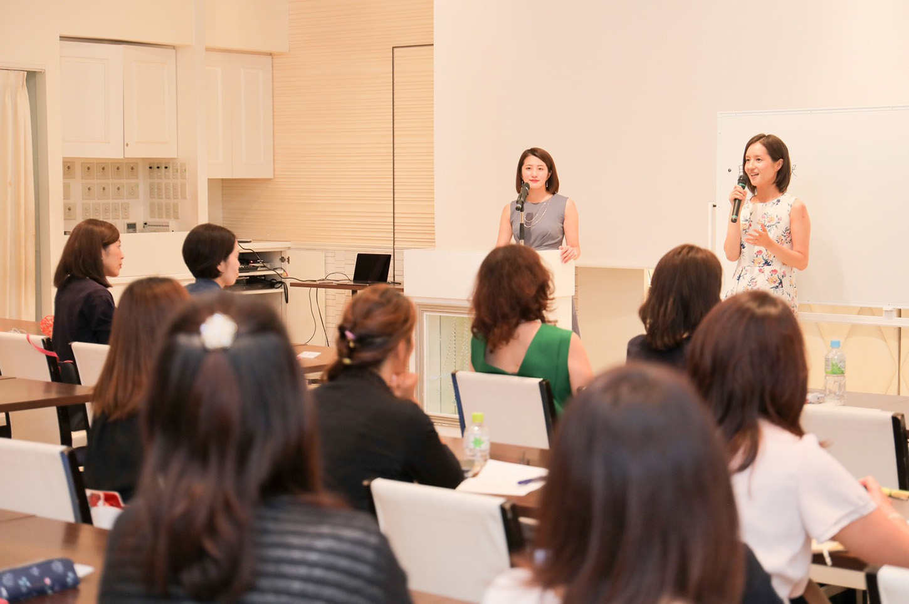
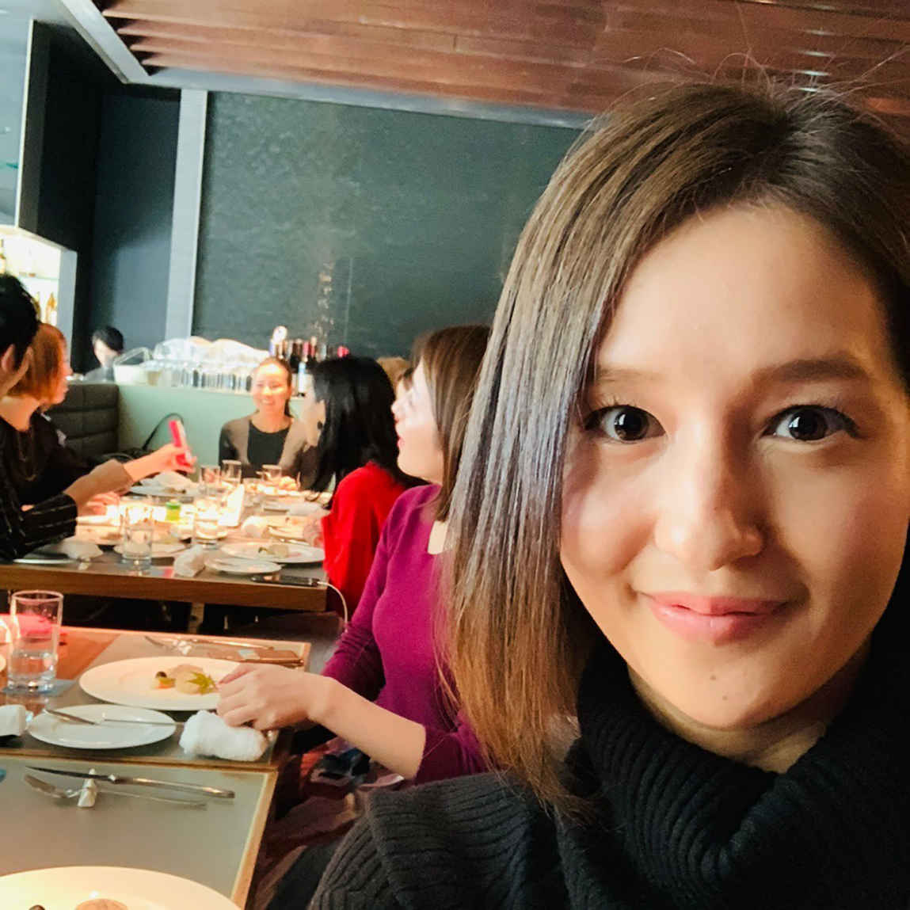
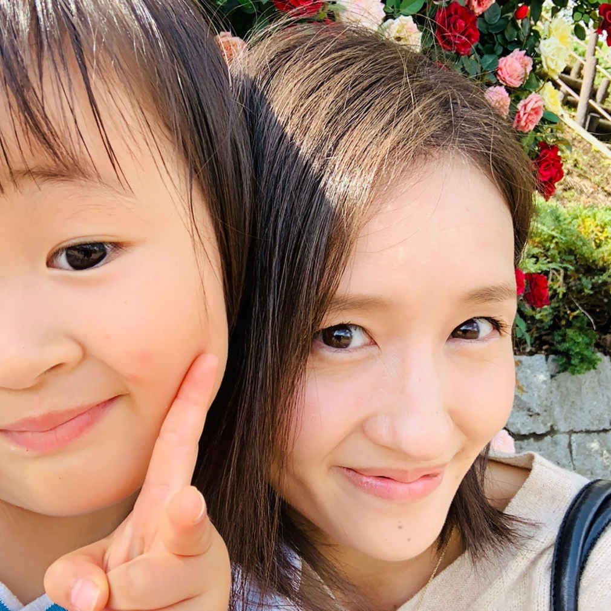
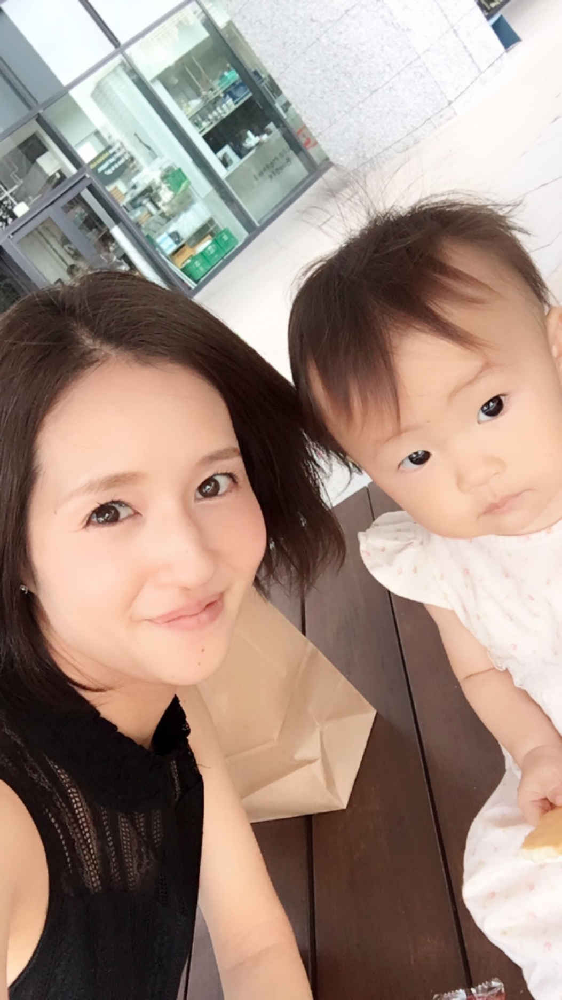
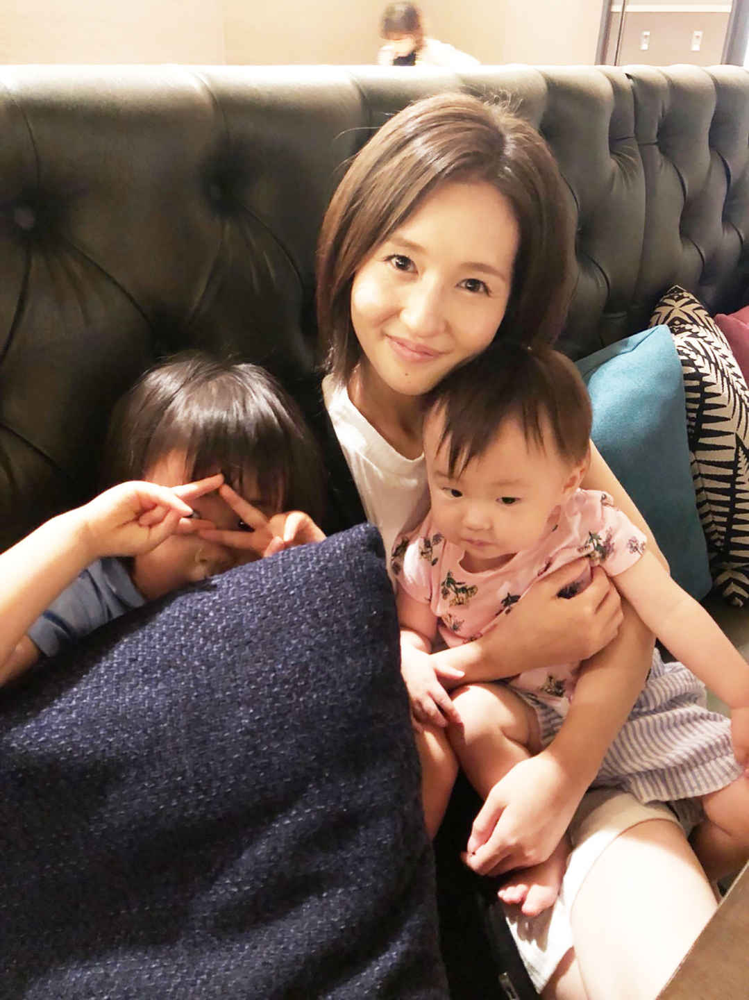

| カツカツママから月収150万超えのリッチママになれた方法 | |
| 新井ゆか | |
| Hitotsuku Publication (2018) | |
新井ゆか
４歳と１歳の子どもを育てながら、自宅で起業・集客コンサルをしている新井ゆかです。私は看護師から専業主婦を経て起業し、３ヶ月後に月商１５０万円、４ヶ月後には月商３００万円を達成しました。
起業する前からリッチだったかというと、そうではありません。貯金ができない月があるほど、本当に毎日がギリギリな生活。旦那さんから貰った生活費でやりくりできた月は、「よかった〜」と胸を撫で下ろすくらいでした。実際、生活費が足りずに、残りわずかな貯蓄を切り崩していた時期もあったほどです。
季節が変わって、子どもの服を買わないといけないのに、買えない。服が汚れたから新しく買ってあげたいのに、買うことができない。０歳の娘に、月齢に合ったおもちゃを買ってあげたいのに買えない。外食や旅行なんて考えられなくて、「どこからそんなお金を出すの！？」というくらい家計はカツカツな状態でした。
そんな私が、今や子どものそばで仕事をしながら月商７桁を稼いでいます
。
子どもとの時間が取れなくて悩んでいるママさん。旦那さんのお給料だけでやりくりしていて、自分の買いたいものが買えなくて、旅行などで行きたい場所があるのに行けなくて、我慢も節約もしている主婦の方。貯金も全然できなくて苦しいママさん。
そんな方の力になりたくて、今回、私は本書を書いています。
ＳＮＳで流れてくる、成功されている方の投稿を見ているだけではなにも変わりません。だからこそ、本書ではそれを見て「いいな」「うらやましいな」と思っているだけで、なかなか行動にうつせない。一歩が踏み出せない方たちへ、私からのメッセージを届けられたらと思っています。
現状を変えようとするとき、特にお子さんを抱えている方は、周りの反対に遭われることもあるでしょう。起業に限らず、なにかを新しく始めるときは「覚悟」が必要になってきます。
私のクライアントさんとお話をしていても、「絶対旦那に反対されるから」「周りからなにを言われるか分からない」という方も多いです。
私自身、副業で失敗していた期間がかなり長かったために、今のビジネスを旦那さんに内緒で始めました。なぜなら「絶対に反対される」と思ったから。ですが、「覚悟」を決めて踏み出した一歩で、大きく成功を掴むことができました。
「これまで失敗しているから」という方も、「失敗したらどうしよう」と不安な方も、「覚悟」を決めることで、人生を変えることができるのです。
起業する前の私は、看護師をしていました。看護師になろうと考えたキッカケは、小さい時からアトピーがひどかったり、よく風邪を引いたりと、体が弱かったからです。
そのため、小さい時は病院通いが結構多く、看護師さんにお世話になる機会が多かったこともあり「白衣の天使さまだぁ。かっこいいなぁ」と憧れを抱いていました。
看護師さんのような、人のためになるようなお仕事がしたい。 人を助けられる看護師になりたい。
病院で看護師さんに会うたびに、その想いは膨らみ、小さいながら「看護師になろう！」と決めていました。
実際、両親にもその頃から「私、看護師さんになるー！」 と言ってきました。もちろん口先だけでなく、小さいながらに「看護師になるためには勉強ができないといけない」ということは分かっていました。
そのため、中学校からは公立に行かず、地元にある私立の中高一貫校に通って、勉強に集中できる環境に入らなければいけないと、将来設計を勝手に立てていました。これを両親に話したところ、学校見学へ連れていってくれたりと協力してくれて、無事に受験し、入学。
中高一貫校に入学後は、「エステの仕事もやりたいなぁ」と夢がぶれたこともありました。ですが、看護師さんに会ったり関わったりする機会がまだ多かったこともあり、高校卒業までは「看護師になる」が夢であり、自分の軸だったのを覚えています。
その軸をブラさず、高校卒業後は専門学校へ。３年間通って、無事に夢の看護師になれました。
看護師になれたときは、小さい頃からの夢を叶えられて、「やっと看護師という仕事ができるんだ！」という感じですごく嬉しくて、仕事も楽しかったです。 お給料も普通の会社員の方よりはよく、それなりに生活もよかったように思います。職場にも恵まれて、仲間や先輩もいい人ばかり。 辛い時もありましたが、順調で楽しかったです。
看護師になってから数年後、結婚して１人目を妊娠しました。妊娠をキッカケに、独身時代のようには働けなくなったんです。
それまでは夜勤にも入り、フルタイムで働いていました。ですが、０〜１歳の子どもを家において、仕事に行く。夜に起きたら「ママが夜勤でいない」。それでも頑張られている方もいらっしゃるんですけど、私は子供が夜中にママがいなくて、寂しくてギャン泣きしているのを想像すると「可哀想だな」と思い、働き方を変えることにしました。
私自身のことを考えても、夜勤明けで疲れて帰宅すると、起きたばかりで元気な子ども。体を休ませる暇もないまま、育児や家事をしていたら、２日間ぐらい寝ていないような状況に陥ることが簡単に予想でき、「その生活はキツイ」と思ったんです。
なので、夜勤なしの非常勤勤務、パートタイムのような勤務体系に変えました。すると、同じ看護師という仕事でも、お給料がすごく減ってしまったんです。
そのため、今まで貯めていた貯蓄を切り崩しながら生活する形に......。「貯金がどんどん減っていく......」という不安を感じながらも、旦那さんとは２人目の子どもが欲しいねという話をしていました。「授かるのであれば、より今の働き方をどうにかできないかな」と考えている時に、ありがたいことに、２人目の妊娠が分かったのです。
クリニックに検診を受けにいったところ、 「切迫流産です」と医師から告げられます。妊娠は継続できているが、流産する一歩手前という危ない状態でした。
「明日から絶対に自宅安静です」と言われたときに、頭をよぎったのは「働けない＝お給料がもらえない」。ただでさえ、貯蓄を切り崩しながら生活しているタイミングでの通告だったため、「これからどうやって生活をしていけばいいんだろう......」とすごく不安になりました。
人生で初めて、お金に関する不安に襲われたんです。本当にどん底というか、目の前が真っ暗に......。頭の中がただ「どうしようどうしようどうしよう」でいっぱいいっぱいになりました。
そんな時、ＳＮＳで副業をしている方から友達申請がありました 。本当に偶然に、です。
それまで、副業という存在を知りませんでした。「世の中にはスマートフォンやパソコンがあれば、スターバックスや自宅など好きな場所で作業をして、収益を得るお仕事の形態があるんだ！」
ということを、その時に初めて知ったんです。
そういったノマドワーカーのような働き方が、私にはとても衝撃的でした。ちょうど絶対安静の時期で、自宅で寝ていないといけない身だった私は「これで稼げたらいいじゃん」と思い、軽い気持ちで副業を始めてみました。
ですが、始めたら全然稼げませんでした......。巷の副業では詐欺まがいのものも、実際存在します。ちょっといいお値段のする商材を買ったり、サポート付きのものに手を出したりしました。
にもかかわらず、「忙しい方がやっているだろうから、質問したくてもやめといた方がいいだろうな」と勝手に遠慮したり、教えてもらっても自己流になってしまったり、自分のイメージだけでやってしまっていたりして、全然稼げなかったんです。
生活の足しにもなるかならないかくらい、本当に雀の涙ほどしか稼げませんでした。
しかもその時は目先の利益だけを考えていて、「来月の生活がやばいから、１万でも２万でも３万でも、とにかく稼がなきゃ！」と、精神的にもいっぱいいっぱいな状態。
家のローンや車のローン、家族の保険代などの支払いに追われる日々で、ちょっと贅沢して、レストランでランチ、夕飯に焼肉さえできませんでした。本当は土日は、平日の育児や家事で疲れているから外食で済ませたいのに、お金が本当にカツカツだったので、疲れているのに自炊して頑張る。今思えば、お金だけでなく、精神的にも肉体的にもキツキツカツカツの生活でした。
もちろん、自分にお金をかけられるわけもありません。 自分が欲しい服は当たり前に我慢。エステは無理でも、せめて高くていい美容液を買って使いたいけど、当たり前に我慢。 日々、欲しいものは増えるのに買えなくてストレスが溜まっていく生活を送っていました。
それもあって、稼げなかったらすぐに諦めて別の商材を探して、またちょっとやってダメだったらすぐ違うのに乗り換えてを繰り返して、私は失敗をしつづけました。 今思えば、どうしようもない、甘ったれた考えだったと思います。そんなノウハウコレクターのような状態が、１年８ヶ月ぐらい続いたんです。
「これだけやってダメなら、ダメだ。さすがに諦めよう」とノマドワーカーのような仕事は自分には向いていないと、何度も諦めようと思いました。
ですが、２人目の子が生まれたら、また０歳の子を育てるところからスタートです。つまり、働きに出ることはできません。
また、上の子がちょうど幼稚園に入るタイミングでもありました。仮に、非常勤の看護師として働いた場合、送迎などを親に手伝ってもらう必要がありましたが、それも難しかったため、私一人で行わなければなりませんでした。
「こんな状況で看護師を続けることができるんだろうか？」と思うようになり、看護師以外の仕事を考えてみたものの、できるとしたらパートタイマーの仕事くらい。いくら時給が高くても、月10
万円ぐらいしか稼ぐことができません。しかも０〜１歳の子を保育園に預けたら５万円ぐらいかかるので、 手元には数万円しか残らないんです。
「それって、働く意味ある？」と考えるようになりました。
ママだから、子どもと遊んだり一緒の時間を過ごしながら、スマートフォンやパソコンでお仕事をして収益をあげる働き方が、今の私には一番いい。そう考え、上の子が幼稚園に入り、２人目の出産を控えたこのタイミングで、看護師は退職することにしたのです。
覚悟を決めた私は、自分に足りないものを考えました。私は、今まで看護師しかしたことがありません。営業、商品企画、経理など、ビジネスに関することを何一つしたことがありませんでした。
「これでは稼げるわけがない」と思い、ノマドワーカーのような働き方をするのであれば、ビジネスの本質を学ばないといけない
と、初めて気づくことができたんです。
そんな時、今の私のメンターとも言える女性起業家さんが、偶然私のＳＮＳをフォローしてくださいました。その方は女性起業家という形でお仕事をされていて、「きちんとビジネスの本質を学べば、未来は変えられるし、そういった環境を整えて待っています」という主旨の投稿をされていたんです。
この投稿を読んだ私は「今まで副業としてなにかをしようとして失敗続きだったのは、看護師としてしか働いたことがなく、ビジネスの本質を全く知らないからだ！」と気付かされたんです。在宅ワークで稼いでいくためにも、ビジネスを学びたいと考えた私は、直感的に「ここだ！ ここでビジネスを学んで、自宅で稼いでいける自分になろう」と、改めて覚悟を決めて連絡して、起業への道を踏み出しました。
ビジネスについてなにも知らなかった私ですが、ビジネスの本質を学んだことで、「これまでパートでしか働いたことがなくても、専業主婦の方でも、マインドの部分をしっかりと整えてあげれば結果が出る。正社員だったとしても精神的な部分が整っていないと結果は出ないんだ」ということが分かりました。
そして現在では学んだことを活かして、在宅で働きたい女性に向けたＳＮＳでの発信方法や、理想のお客様に来てもらう方法、セルフブランディングについてなど、０からの起業を支援する仕事をしています。起業して３ヶ月後には月商１５０万円を達成し、４ヶ月目には月商３００万円、その後も売り上げは右肩上がりで伸びています。
東京に２年に１回行けるか行けないかくらいだったのに、今は月に１回行くことができています。しかも、仕事でです。夏休みなど、タイミングが合うときは家族を連れて東京や大阪に行き、ホテルに泊まってゆっくりする生活をしています。それも事前にではなく「その日来れる？」みたいな軽いノリから、その場でホテルやチケットの手配をして、勢いで行っちゃうこともできるようになりました。
土日は私も旦那も仕事で疲れているので、美味しくてお洒落なところに限らず、行きたいところに行って外食で済ませています。
スーパーでの買い物も、今までは安くて量が多いものを選んでいましたが、買いたいもの、品質のいいものを選べるようになりました 。自分の行きたいところへ行って、買いたいものを買える生活になったんです。
子どもに対しても、習い事を自由にさせてあげられるように。最近、娘がバイオリンを始めたのですが、それは家族ぐるみで仲良くさせてもらっている恩師のお子さんが、バイオリンを習っていたのがきっかけです。見せてもらった時に、子供が「私もやりたい」と。
今までなら「高いから無理だよ」と断っていましたが、普通に今はやらせてあげられています 。経済的なことなどを考えて、子どもがしたいことを制限する必要がなく、応援してあげられているんです。
もちろん、自分にもエステなど美容面でお金をかけられるようになりましたし、 服も好きなものを買えています。覚悟を決めたからこそ、今、リッチなママになることができたんです。
結果が出ているからこそ「この体験をもっと多くの人にしてもらいたい！」
と、ママ起業家応援スクールの講師として精力的に活動しています。

お金を稼ぐことは、楽ではありません。「楽して稼げることは、世の中に１つもない」
と言えるかもしれません。
巷には「スマートフォンを１日たった５分、ポチポチ作業すれば稼げます！」なんて副業があったりしますが、それで稼げている人を見たことはありますか？ 実際、副業関連のＬＩＮＥ＠
に登録しても、ちょっとすると「新しい案件はじめました」みたいなメッセージが来たり......。
ちゃんとビジネスの元ができていない人は、稼げなくなったら違う商材に行くというパターンに陥ることが非常に多いです。そのため、そういった詐欺も少なくありません。私自身、商材を買うまではすごく優しかったのに、買ったら連絡がつかなくなり、商材の中身も「なんだこれ！？」というものだった詐欺にあったことがあります。
本当に自分が稼いでいきたい、ビジネスで成功したいのであれば、努力が必要です。それを支えてくれるのが「家族」という原動力です。
私自身、貯金を切り崩して生活がカツカツしていた時期は、買いたいものを我慢してやりくりしていました。
エステに行きたい。美味しいものを食べたい。買いたいものは値段を見ずに買いたい。そういう想いを持ちつつも、「２人の子供が大きくなった時に、子どもがやりたいと思ったことをやらせてあげられるようになりたい」と節約などを頑張っていました 。
「お金がないからごめんね」というママになるのが嫌だったんです。習い事だけじゃなくて、海外に連れていってあげたりと色々してあげたい。子どもが「○○がしたい」と言ったときに叶えてあげられるママでいたい。
そうやって考えていくと、月10
万円や20
万円じゃ、現状は全然変わらないことに気づきました。貯金もしたいし、親にも月十数万ずつ渡せるようにもなりたいのです。
すると、自然と「月１００万円をコンスタントに稼げないと、人生は変わらないんだ」と思えるようになり、「ではどうやって月１００万円を稼げばいい？」と考えるようになり、どんどん行動を起こせるようになりました。
旦那さんは生活費をきちんと入れてくれていて、「その中で自由にやりくりしていいよ」と常々言ってくれていました。「高くても欲しい服なら買ってもいいよ」、「やりたいことならしてもいいよ」という感じだったんです。
家族のために旦那さんが頑張ってくれている姿を見て、「旦那さんや子ども、家族の人生をよくしたい。豊かにしたい。そのために私自身が変わりたい」という想いが、沸々と湧いてきたんです。その想いが溢れて、私は起業の道を歩み始めました。
ですが、副業で失敗が続き、全く稼げていない私を見た旦那さんは、「ゆか、いい加減にしろ」、「商材だけ買ってお金を無駄にして......」とビジネスに関する商材に悪いイメージを持つようになってしまったんです。その延長で、インターネット上のお仕事すら、悪印象を抱くようになってしまいました。
それでも「家族のため、旦那さんのためにも人生を変えたい」
と思い、女性起業家さんの門を叩いたんです。ただ、自己投資額が安いものではなかったから、最初は旦那さんにバレないように始めました。
それでもこれまでと違い、しっかりと覚悟を決めて臨んだため、今はリッチママとしてきちんと成功することができています。「子どものために」「旦那さんのために」という想いを起点に、私の起業人生は始まりました。
実際、現在私が講師を勤めている、日本最大級のママ起業家応援スクール『ハッピーリッチママ』に入会をされている方の多くは、「結婚して子どもはまだだけれども、将来のことを考えて在宅でのビジネスをしたい」だったり、「離婚してシングルマザーになるので、できるだけ子どものそばで働きたい」だったり、お子さんのことを考えておられます。
そんなママたちのために『ハッピーリッチママ』では、起業支援や集客の方法を学べるインターネット上のビジネス講義を行っています。
「私には資格もスキルも趣味も取り柄もない」と思っておられる方、子どもが小さくて外に働きに出られない方、パートしかできなくてお給料が安くて困っている方の、「起業して在宅で稼いで、子どものためだけでなく家族全員で豊かになりたい」という想いを叶えるべく、ビジネスの本質を学べて起業を後押しする場を提供しているのです。
もちろん、そういった方の中には「自分には商品がないから不安......」という方もおられるでしょう。私自身も看護師という「持っていながらも、外に働きに出ないと活かせない資格」だけしか持っていませんでした。
そんな私が商品としているのは「自分自身」です。自分の今までの人生や考え方を発信することで、ファンになってくれる人が現れます。そんな私に共感してくれた方に、私が人生を変えた方法や学んだビジネスについてを、『ハッピーリッチママ』のスクールを通じて提供していっている形です。
それだけでなく、ネイルやエステ、ベビーマッサージのサロンをされている方のように、自分の商品を持っていて店舗を構えている方の支援もしています。「サロン１本でやっていきたいのだけれど、お客様がなかなか来なくて、集客に困っている」、「予約でいっぱいにしたい」、「趣味程度のサロンと言われるのではなくて、きちんと事業として成り立たせて充実させたい」という方に、集客の方法を講義しています。
『ハッピーリッチママ』には、起業初期の私のような方が多いです。「人生を変えたい」だけでなく、子どものためなど「家族」を原動力に稼いでいきたい方が非常に多い
んです。痛いほど気持ちが分かるからこそ、私も全力でサポートさせていただいていますし、都度都度「家族という原動力の重要性」を感じさせられています。

私の人生も、子どもの人生も、旦那さんの人生も、刻一刻と進んでいます。どんどん時間は過ぎていっていますし、やり直しは効かないのです。
あなたが決断しなければ、今のカツカツの生活をずぅーっと送ることになるんです
。５年後も10
年後も、ずっと今の生活です。それで本当にいいんですか？
私は、そんな生活が嫌でした。１年後もカツカツで、貯金もできず、我慢ばかりしている生活なんて......。
１年後は子どものそばにいながら、月収１００万円をコンスタントに稼ぐ生活を。家族で色んなところへ一緒に行けて、美味しいものが食べられる楽しい人生を。心から充実している人生を送りたい。
あなたが本気でその生活を目指して、行動していけば想いは伝わるんです。
新しいことを始めようとするとき、反対する人の気持ちもわかります。
「家で稼げる仕事をしたい」と動き出した私を旦那さん目線で見ると、自分がよく知らない仕事に興味を持ち始めた訳ですから、「一体、なにをやってるんだろう」「子どももいるのに大丈夫なのか？」となって当然です。両親も心配になって、「パートで看護師やればいいじゃん」と言ってきたりしました。
新しいことに挑戦することは、挑戦する人も周りの人も、少なからず不安を持っています。絶対に成功することが約束されていませんから、両親や旦那さんなどが安心する方へ行かせたがるのは当然です。
また、現在50
代・60
代の方は、「１回職についたら、会社のために働こう。定年まで勤め上げて当然。退職金をもらって、老後にやりたいこと......」という考えが当たり前という中で生きてきています。そういった考えを持つ親の元で育つと、その子どもも同じ考えを持つため、「起業とか、普通に考えて『頑張れ』とは言えない」という人が多いんです。
私の周りにも「怪しいことをしているんじゃない？」と思っている人は実際にいると思います。「頑張ってね」と応援してくれている友だちもいますが......。
家族全員で豊かな人生を歩みたい。だからといって「あとプラス50
万円ぐらい稼いできてよ」なんて言えないですよね？ 旦那さんは家族のために、一生懸命頑張って仕事をしてくれています。そんな旦那さんの頑張っている姿を見ていたら、刺激を受けて「自分も変わりたいな」と思って当然です。
なのに、「お母さんに言ったら、反対されたからやめておこう」と考える。そんなのもったいありません。
大事なのは「自分がどうしたいか」
です。他人がどう思うかを気にしていたら、あなたの人生、あなたの家族の人生なのにもったいありません。
あなたを反対する声を受けいれることで、あなたの人生は変わりますか？ １年後、２年後、違う人生を歩めているのでしょうか？
周りに反対されているからやめておこうという思考は、本当にもったいありません。自分が「こういう人生を送りたい」「家族とこういう生活がしたい」という想いを持っているのであれば、あなたが変わらないと、誰もあなたの人生を変えてはくれないのです。
「誰かがあなたの人生を良くしてくれる」なんて夢物語はないのです。あなたが変わるしかありません。夢は自分から掴み取らないと、なにも始まらないのです。
私は、旦那さんに内緒で起業しました。カミングアウトをしたのは、ちょうど下の娘が１歳になったタイミングくらい。働くことが好きなのを知っていた旦那さんは、「そろそろ働きに出たくなったりしないの？」と度々聞いてくるようになったんです。
「いずれはバレることだし、このタイミングでカミングアウトした方が応援もしてもらいやすいかもしれない」と考えて、ビジネスが上手くいきはじめていたこともあり、起業をしていることを告白しました。ここまで書いてきた家族への想いやこれからの人生についてしっかりと伝え、「寝る間も削って頑張って絶対に結果出すから！」と。
もしかしたらまた失敗するかもしれない。でも、今までとは比べ物にならないくらいの覚悟を持って臨むから、なにも言わずに見ていてほしいと伝えたんです。
そう伝えたことで、自分自身もより一層ガムシャラに起業に打ちこめて、結果も出て、充実した生活が送れるようになりました。旦那さんも、私の本音と本気の姿を見て、今では応援してくれています
。
ですから、結果が出てきてからカミングアウトするのもいいと思います。
ただ、最初にもお伝えしている通り、楽して稼げるものはありません。特に起業初期は学んだり、実践したり、上手くいかなかったことを修正したり、なにかしらもがきながら頑張っていることがほとんどです。
周りに起業のことを理解してほしい方は、そういった頑張っている姿を、旦那さんや親に見てもらうようにするといいかもしれません。
「これまでは寝かしつけのときに一緒に寝ちゃってたのに、起きて頑張っているな」とか、「夜中起きて、パソコンでなんかしてるじゃん」とか、「趣味の動画じゃなくて、ビジネスの勉強をしているの！？」とか。そういう風に本気で行動していけば、自然と「頑張っているな」「すごいじゃん」と、周りに頑張りが伝わり、ビジネスについて理解していってもらいやすいのではないでしょうか。
行動すれば、努力すれば、周りの目も変わってくるんです
。
副業で失敗続きだった私も「本気で変わってやる！」と、子供が寝ている時間を有効活用して動画を見て勉強したり、情報発信のブログを書いたり、朝早くに起きてパソコン作業をしたり、それと並行して家事育児もしっかりやるようにしました。すると旦那さんが体調を心配してくれるようになったり、「頑張れよ」と応援してくれたりするようになったんです。
子どもを寝かしつけるときに一緒に寝ていては、実績も旦那さんの理解も得られません。本気で頑張ると、自然と実績が出てきます。実績が上がってくると、旦那さんや両親など周りも変化していき、「あのとき信じてよかった」となってくるんです。
今では、東京や大阪の出張に家族揃っていくこともありますし、旦那さんも私に一目置いてくれるようになりました。
私自身がそうだったように「起業する」となったときに、最初から両手を挙げて応援してくれる人はごく少数です。
周りがしたことないことをするのですから、仕方がありません。どういう仕事をしているか、説明したとしてもイメージがつかないため、理解したくてもできないんです。そういう人たちがいる中で、「あなたがどうしていきたいか」
が一番大切なのです。
私は本気で頑張る姿を見せることで認めてもらい、実際に結果も出したことで、旦那さんなど周りにいい影響を与えることができ、いい循環を生むことができました。
「自分が変わりたい」、「自分を変えたい」と本気で思っているのであれば、行動していくことが大事です。「反対されるからいいや」と思っている方は、それだけの覚悟しかないんです。気持ちの弱さが表れているとも言えます。
「いや、私は諦めきれません。欲しいものを買って、高級レストランでごはんを食べる生活が本当にうらやましいです」という人は、周りの声なんて気にする必要はありません。
やりたい・実現したいことがあるのであれば、自信を持って努力をしていけばいいんです。だって、起業は「いけないこと」ではありません。自信を持って、本当にやりがいがあって楽しくて、１２０％
いいと思っていることを仕事としているわけですからね。
反対される人の方が圧倒的に多いです。あなただけじゃありません。みんな、最初は内緒にしたり、旦那さんと徹底的に向き合って話したり、そういった反対の壁を乗り越えています。乗り越えているからこそ、成功しているんです。
反対という壁があるからこそ、真剣に頑張れて、結果を出すことにつながっているのです。
本当にあなた次第です。やりたいか、やりたくないか。自分が送りたい人生を叶えていきたいのか、叶えたくないのか。実はそれだけです。
できるかできないかより、やるかやらないか
。どちらを選択するのか、本書を手に取った今、真剣に考えてみてください。
といっても、時間は有限です。人は必ず死にます。寿命はいつか尽きるんです。それまでのたった一度しかない人生を、どういう人生にしていくのか。真剣に考えていきましょう。
一生ウジウジ考えて、お金がカツカツの生活を送るのか。自己投資をしてでも、変われる自分になっていくのか。
もし「現状を打破したい！」と本気で思っておられるのであれば、これからご紹介する４つを今から意識するようにしてみてください。
私は私立の中高一貫校を出て、看護の専門学校へ行ったわけですが、これらの学校が無料だったわけではありません。看護師になりたかったので、そのためのスキルを学べる場に、お金を払って入った形です。
「看護師のためのスキルを無料で教えてあげるよ」というスクールがあったとしたら、怖いですよね？ そこで教えていることを信用していいのか分かりませんし、「詐欺なんじゃないか」「あとで高額がかかってくるんだろう」と思う人がほとんどだと思います。
つまり、「なにかを学ぼう」「なにかになりたい」と考えたときに、そのスキルを教えてくれる場にお金を払うのは当然のことなのです。
これが、自己投資。実際、起業初期の私は「月収１００万円をコンスタントに稼ぐ自分になりたい」と思っていたので、ビジネスの本質を学べるスクールに、お金を払って入りました。お金はもちろんかかりましたが、消費ではなく投資をしたのです。
消費の場合、お菓子を買ったら、お金は戻ってきません。手元にお菓子が残るだけです。しかも、食べたらなくなってしまいます。
一方、投資ならば「学べる環境」や教科書などの商材などが手に入るだけでなく、それを元にして頑張り次第では、自己投資した以上の収益を手に入れることができるんです
。
この考え方は、本書を読んでいる人に限らず、全ての人に持ってほしいです。もちろん投資にも、不動産投資や株式投資など様々な種類があり、合う合わないもあるから一概には言えません。
ですが、自己投資は投資した以上のものがしっかりと返ってきますから、した方がいいと思います。私はビジネスのスキルを身につけていくことに自己投資をしました。その結果、ビジネスのスキルやノウハウをしっかりと学ぶことができ、在宅で稼いでいくことができるまでになりました。また月収も１年以内に１００万円を目標としていましたが、半年で達成することができており、「子どものそばにいれて、人生が１８０度変わる最高の自己投資をした」と考えています。
もしあなたが変わりたいと思うなら、自己投資は必要です。世界で総資産額第３位のウォーレンバフェット氏も、「成功するには自己投資が一番大事」
だと言っているほどですから、一度しっかり考えてみてください。
新しい環境に入ったり、自己投資をして新しくなにかを学びはじめたりする時は、誰しもワクワクだけでなく、「失敗したらどうしよう」「怖い」という不安な気持ちを抱きます。
そういうときに「自分は絶対にやってやるんだ！」という強い気持ちを持つことが本当に大事です。将来の自分の姿や、理想とする人生を手に入れたときをイメージして、それを実現していくんだと信じる。そうやって、自分が自分自身を信じることが、成功を引き寄せていきます
。
初めは周りから反対もされるでしょうし、そんな中だからこそ自分を自分で信じてあげないといけません。だって考えてみてください。自分が、自分を信じていなかったら、他人があなたを信じてくれることなんて絶対にないと思いませんか？
あなたの味方は、あなた自身。信じて、進んでいく強さを持ちましょう。
実は「こうかな？」と思い立ったときに行動すると、いい方向に行くことが多いのをご存知ですか？
例えば月収１００万円がコンスタントに稼げる環境があったとして、「今すぐやる！」と即座に始めたＡさんと、「ちょっと考えるわ」とやりたいけれど色んなことを考えてしまい３ヶ月後に始めたＢさんがいたとしましょう。どれくらいの差が出るか、分かりますか？
３００万円です。３ヶ月で３００万円。これって本当にもったいないと思いませんか？ 時間が有限で、限られているからこそ、思い立ったら早く行動した方がいいのです。あれこれ考えるより、すぐ行動に移した方が行動量は多くなりますし、成長も早くなります
。
私は小さいときから「思い立ったら即行動」といったタイプなんですが、もちろんそれで失敗してきている部分もあります。ですが、その分「学んだなぁー」と感謝できていることもたくさんあるのです。
思い立った時が、行動すべき時です。例えば「ディズニーランドで遊びたい」という話になったら、ホテルやチケット代、アトラクションをリサーチしたりしませんか？ 楽しいことであれば、即座に行動を起こすはずです。それと同じで、「自宅で稼げるお仕事はないかな？」と思ったら、その場で色々調べてみてください。
思い立ったら、まずすぐ調べる。「起業したいな」「稼ぎたいな」と思い立ったら、まず検索してみる。
「起業する」と決めたのであれば、「参加費が......」とか「友だちが......」とか「両親が......」とあれこれ考える前に、学ぶべきスキルやどんな道に進んでいけばいいかを具体的に考えていきましょう。実際に私は「思い立ったら即行動」で成功をしてきているので、一回真似てみてほしいなと思います。
あなたは抱えている悩みだったり夢だったりを、誰かに相談したことはあるでしょうか？ 分かりやすく説明していきますね。
例えば、あなたが現在ものすごく咳が出ていたとしましょう。「寒気はないし、頭痛もない。風邪のようだけど、本当にそうなんだろうか？」と、自分ではどんな病気か判断することは難しいですよね。
こういった場合、病院に行きますよね。先生に「風邪ですね」と診断してもらって、２日分の薬をもらう。これでようやく、あなたは咳きこんでいた理由が分かり、治す方法も分かったことになります。
これと同じで「現在の収入を超える、新たな収入の柱を構築したいんです」や「起業したいんですけどどうしたらいいですか？」などといった悩みを解消するには、専門家に相談する必要があるのです。
専門家とは、あなたが思い描く将来を既に歩んでいる方、成功されている方のこと。１人で抱え込んでいてもなにも始まりません。専門家のＬＩＮＥ＠
に、友だちに相談するように素直にお話ししてみたり、セミナーなどに参加して直接会って相談してみたりすることが一番です。
周りの人になかなか言えていないこと、１人で抱え込んでしまっていること、今の生活から抜け出したい。そんなあなたの素直な想いを、ストレートに相談してみてください。そうすると、成功している方やその周りの方からどんどん、あなたが想像していなかったような解決方法や回答をいただくことができます。
そのためにも、まずは悩みを相談してみる。自分の想いを発信してみることから始めましょう。私のＬＩＮＥ＠
でも相談を受けつけており、マンツーマンでやり取りできますし、有益な情報を発信しておりますので、よければご登録くださいませ
。

昔は、したいことがあっても、お金がありませんでした。時間だけはあって、ただただ我慢の毎日でした。
頭の中がカツカツで「給料日まで２週間もあるのに、これだけのお金でやりくりしないとあかん」と精神的に余裕がなくて、イライラしていました 。子供にも、ごはんをこぼしたり物を落としたりするだけで「なにやってんのー！」とよく怒っていました。本当に余裕のないママだったと思います。
今は、お金の余裕ができたことで、精神的にも余裕が本当にできました。子供がジュースをこぼしたくらいでは怒らなくなりました。やりたいことをやりたいと思ったときにすぐできます。外食に行きたいと思ったら、すぐに行けます。「コレほしいな」と思ったら、すぐに買えます。手に入れたかった豊かな生活を送れているんです。
子どもにも「ママが心から笑っている」「充実していて、楽しそう」という雰囲気が伝わっているようで、「大好き」と言ってくれる回数が増えたり、 「一緒にあそぼー」と声をかけてもらえる回数が増えました
。今までのどこか心配事があるような雰囲気から、毎日が楽しいといった雰囲気に自然と変わったのを気づいているのかなと思います。
私のようなリッチママになりたいと思ってくださった方。やらないと、なにも始まりません。行動すると、失敗するかもしれませんが、なにかしらの道が開けてくるんです
。
憧れの人のＬＩＮＥ＠
に登録するだけでも、行動です。「その人に話を聞いてみたい」と思って、会いに行ってみるだけでも、行動です。ちょっとずつでもいいから、本書をキッカケにそういった行動を起こしていってほしいなと思います
。
最後に、私のメンターやいつも刺激をくれる『ハッピーリッチママ』のメンバーのみんな、そばで私をいつも支えてくれている子どもたちに旦那さま、そして両親に感謝を込めて。
いつもありがとうございます。

新井ゆか
１９８９年生まれ、岐阜県在住。
トータル約６年間、看護師として総合病院にて職に就いたのち、２人目の出産を機に退職し専業主婦へ。
お金のせいで子どもや自分が我慢ばかりの生活から脱却したく、２０１８年５月に起業。
わずか３ヶ月で月商１５０万円、４ヶ月目には月商３００万円を達成。
その後も収入は右肩上がりで伸びている。
起業前は、カツカツ生活で欲しいものも買えない、他人のＳＮＳを見てはいつも羨むばかりであった。
そんなどん底の経験から、同じように悩んでいるママや専業主婦の方も、資格や取り柄がなくても、お金・時間・場所の自由を手に入れることができるということを伝えたい。
皆それぞれの理想のライフスタイルを掴み取ってほしい、という思いで日々活動している。

タイトル カツカツママから月収１５０万超えのリッチママになれた方法
発行日 ２０１８年12
月９日
著 者 新井ゆか
本書の全部あるいは一部をコピー、スキャン、デジタル化する無断複製は、著作権法上での例外である私的利用を除き禁じられています。本書を代行業者等の第三者に依頼してコピー、スキャンやデジタル化することは、たとえ個人や家庭内での利用であっても一切認められていません。
©２０１８ Yuka Arai